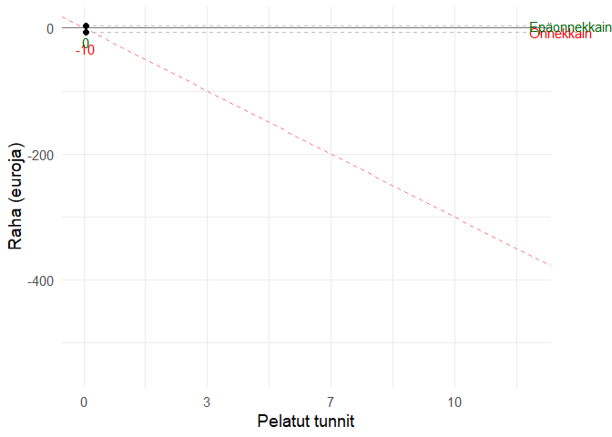
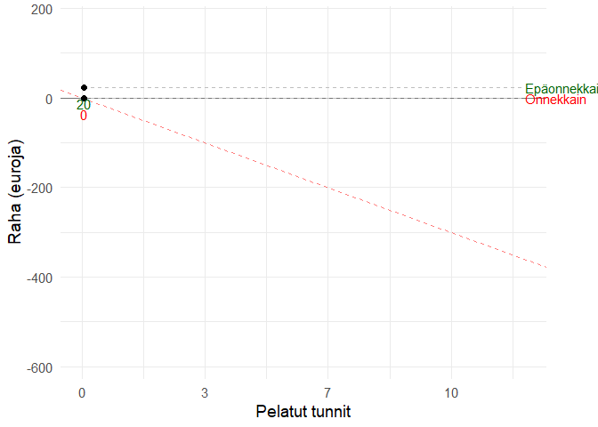
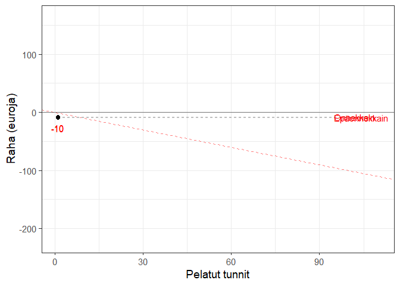
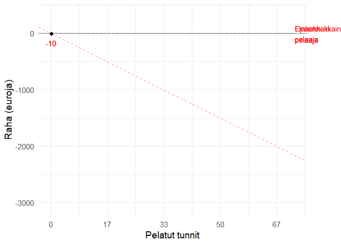

Oletukset:
library(tidyverse)
library(gganimate)
library(transformr)
library(truncnorm)
#Helper function, mean of truncated normal distribution
truncatedmean <- function(mu=0,sigma=1,a=-Inf,b=Inf){
mu+sigma*(dnorm((a-mu)/sigma)-dnorm((b-mu)/sigma))/(pnorm((b-mu)/sigma)-pnorm((a-mu)/sigma))
}
volatility_simulator <- function(minutes, ev, SD, players, topbottom=F, volatility="low") {
simulations = data.frame(nrow = 0)
cumEV = cumsum(rep(ev, minutes))
cumSD = sqrt(cumsum(rep(SD^2, minutes))) #first convert to variance, then convert the sum back to SD
lower <- qnorm(0.025, cumEV, cumSD)
upper <- qnorm(0.975, cumEV, cumSD)
confidence <- data.frame(cbind(lower, upper))
confidence$ID <- seq.int(nrow(confidence))
for (i in 1:players) {
#High volatility: smaller frequent wins, larger rare wins (100)
if (volatility=="high") {
# Note! Below we truncate at -5 since that's the maximum that can be lost. The EV has to be set so that the mean of the truncated distribution is -0.5! (happens to be truncatedmean(-2.105, 4, -5)) == -0.5004906. TODO: automatize this!
# Total added EV due to volatility (100e once every hour)
total_added <- (minutes/60)*100
# Add total_added/minutes to -5 since it will be later subtracted
test <- data.frame(x = rtruncnorm(minutes, -5+(total_added/minutes), Inf, mean=ev, sd=SD))
#OLD VERSION, allows losses to be below -5:
#test <- data.frame(x = rnorm(minutes, mean=ev, sd=SD))
test$x[sample(nrow(test), minutes/60)] <- test$x[sample(nrow(test), minutes/60)] + 100 #add 100 once every hour/60 minutes
test$x <- test$x - total_added/minutes #evenly subtract the added EV above (i.e. minutes/60 * 100 euros)
}
#Medium volatility: semi-small frequent wins, medium rare wins (30)
else if (volatility == "med") {
# Total added EV due to volatility (30e every 20 minutes)
total_added <- (minutes/20)*30
# Add total_added/minutes to -5 since it will be later subtracted
test <- data.frame(x = rtruncnorm(minutes, -5+(total_added/minutes), Inf, mean=ev, sd=SD))
#OLD VERSION, allows losses to be below -5:
#test <- data.frame(x = rnorm(minutes, mean=ev, sd=SD))
test$x[sample(nrow(test), minutes/20)] <- test$x[sample(nrow(test), minutes/20)] + 30 #add 30 once every 20 minutes
total_added <- (minutes/20)*30
test$x <- test$x - total_added/minutes
}
#Low volatility: medium frequent wins
else {
# Total added EV due to volatility (nothing)
total_added <- 0
test <- rtruncnorm(minutes, -5, Inf, mean=ev, sd=SD) #could add -5+(total_added/minutes) for clarity, which is -5 + 0/minutes = 0
#OLD VERSION, allows losses to be below -5:
#test <- data.frame(x = rnorm(minutes, mean=ev, sd=SD))
}
test <- data.frame(run = test)
names(test)[1] <- i
simulations <- cbind(simulations, cumsum(test))
simulations$nrow <- NULL
}
max_value <- which(tail(simulations, 1) == max(tail(simulations, 1))) #Among the last row, which column has the highest value
min_value <- which(tail(simulations, 1) == min(tail(simulations, 1))) #Among the last row, which column has the lowest value
simulations$ID <- seq.int(nrow(simulations))
simulations.long <- simulations %>%
gather(key, value, -ID) %>%
dplyr::mutate(profit = factor(ifelse(value > 0, 1, 0))) #Pelaaja voitolla vs. ei
#Plot all "players"
plot <- simulations.long %>%
ggplot(aes(ID, value, group=key)) + #group here required for complex animation
geom_line(aes(colour = key)) +
# NOTE! Below slope is defined as per the mean of the truncated distribution! (-5 is manually set as the maximum amount that can be lost)
# TODO: AUTOMATIZE!
# Old version: slope = ev
geom_abline(intercept = 0, slope = truncatedmean(ev, SD, -5+(total_added/minutes), Inf), linetype="dashed", size=0.5, color="red", alpha=.5) +
geom_hline(yintercept = 0, size=0.5, alpha=.5) +
xlab("Pelatut tunnit") + ylab("Raha (euroja)") +
theme_minimal(base_size=14) +
scale_x_continuous(labels=function(x)round(x/60)) +
guides(color="none")
#Plot only the top and bottom "players"
plot2 <- simulations.long %>%
dplyr::filter(key == max_value | key == min_value) %>%
dplyr::mutate(key = factor(key, levels = c(max_value, min_value),
labels = c("Onnekkain\npelaaja", "Epäonnekkain\npelaaja"))) %>%
ggplot(aes(ID, value, group=key)) +
geom_line(aes(colour = key)) +
#Old version: slope = ev
geom_abline(intercept = 0, slope = truncatedmean(ev, SD, -5+(total_added/minutes), Inf), linetype="dashed", size=0.5, color="red", alpha=.5) +
geom_hline(yintercept = 0, size=0.5, alpha=.5) +
xlab("Pelatut tunnit") + ylab("Raha (euroja)") +
theme_minimal(base_size=14) +
scale_x_continuous(labels=function(x)round(x/60)) +
guides(color="none")
#Combined plot
plot3 <- simulations.long %>%
dplyr::mutate(maxmin = case_when(key == max_value ~ "Onnekkain\npelaaja",
key == min_value ~ "Epäonnekkain\npelaaja",
TRUE ~ as.character(NA))) %>%
ggplot(aes(ID, value, group=key)) +
geom_line(aes(colour = maxmin)) +
#Old version: slope = ev
geom_abline(intercept = 0, slope = truncatedmean(ev, SD, -5+(total_added/minutes), Inf), linetype="dashed", size=0.5, color="red", alpha=.5) +
geom_hline(yintercept = 0, size=0.5, alpha=.5) +
xlab("Pelatut tunnit") + ylab("Raha (euroja)") +
scale_color_manual(values=c("red", "blue", "grey97")) +
theme_minimal(base_size=14) +
scale_x_continuous(labels=function(x)round(x/60)) +
guides(color="none")
if (topbottom == F) {
return(plot)
}
else {
return(plot2) #Change to "plot3" to visualize all simulations
}
}Jos sinä ja 49 kaveriasi pelaatte kaikki 12 tuntia matalan volatiliteetin pelejä, teistä onnekkain ja epäonnekkain pelaaja menestyy näin:
# Note! The EV has to be set so that the mean of the truncated distribution is -0.5! (happens to be truncatedmean(-2.105, 4, -5)) == -0.5004906 when SD = 4. TODO: automatize this!
animation <- volatility_simulator(720, -2.105, 4, 50, T) +
geom_segment(aes(xend = 720, yend = value), linetype = 2, colour = 'grey') +
geom_point(size=2) +
geom_text(aes(x = 720, label = key, color=profit), hjust = 0) +
geom_text(aes(x = ID, label = round(value, -1), color = profit), vjust=2) +
scale_color_manual(values=c("red", "darkgreen", "salmon", "lightblue")) +
transition_reveal(ID) +
coord_cartesian(clip = 'off') +
theme(plot.margin = margin(5.5, 50, 5.5, 5.5))
animate(animation, duration = 15, fps = 10)
Jos sinä ja 49 kaveriasi pelaatte kaikki 12 tuntia keskitason volatiliteetin pelejä, teistä onnekkain ja epäonnekkain pelaaja menestyy näin:
# Manuaalinen korjaus keskitason volatiliteetin vaikutukselle odotusarvoon
# 720/20*30 / 720 == 1.5; truncatedmean(-4.05, 4, (-5 + 1.5)) == -0.5002762
animation <- volatility_simulator(720, -4.05, 4, 50, T, "med") +
geom_segment(aes(xend = 720, yend = value), linetype = 2, colour = 'grey') +
geom_point(size=2) +
geom_text(aes(x = 720, label = key, color=profit), hjust = 0) +
geom_text(aes(x = ID, label = round(value, -1), color = profit), vjust=2) +
scale_color_manual(values=c("red", "darkgreen", "salmon", "lightblue")) +
transition_reveal(ID) +
coord_cartesian(clip = 'off') +
theme(plot.margin = margin(5.5, 50, 5.5, 5.5))
animate(animation, duration = 15, fps = 10)
Jos sinä ja 49 kaveriasi pelaatte kaikki 12 tuntia korkean volatiliteetin pelejä, teistä onnekkain ja epäonnekkain pelaaja menestyy näin:
# Manuaalinen korjaus korkean volatiliteetin vaikutukselle odotusarvoon
# 720/60*100 / 720 == 1.666677; truncatedmean(-4.403, 4, (-5 + 1.66667)) == -0.5007701
animation <- volatility_simulator(720, -4.4032, 4, 50, T, "high") +
geom_segment(aes(xend = 720, yend = value), linetype = 2, colour = 'grey') +
geom_point(size=2) +
geom_text(aes(x = 720, label = key, color = profit), hjust = 0) +
geom_text(aes(x = ID, label = round(value, -1), color = profit), vjust=2) +
scale_color_manual(values=c("red", "darkgreen", "salmon", "lightblue")) +
transition_reveal(ID) +
coord_cartesian(clip = 'off') +
theme(plot.margin = margin(5.5, 50, 5.5, 5.5))
animate(animation, duration = 15, fps = 10)
Jos sinä ja 49 kaveriasi pelaatte kaikki 72 tuntia korkean volatiliteetin pelejä, teistä onnekkain ja epäonnekkain pelaaja menestyy näin:
# Manuaalinen korjaus korkean volatiliteetin vaikutukselle odotusarvoon
# 4320/60*100 / 4320 == 1.666677; truncatedmean(-4.403, 4, (-5+1.666667)) == -0.5007701
animation <- volatility_simulator(4320, -4.403, 4, 50, T, "high") +
geom_segment(aes(xend = 4320, yend = value), linetype = 2, colour = 'grey') +
geom_point(size=2) +
geom_text(aes(x = 4320, label = key, color = profit), hjust = 0) +
geom_text(aes(x = ID, label = round(value, -1), color = profit), vjust=2) +
scale_color_manual(values=c("red", "darkgreen", "salmon", "lightblue")) +
transition_reveal(ID) +
coord_cartesian(clip = 'off') +
theme(plot.margin = margin(5.5, 50, 5.5, 5.5))
animate(animation, duration = 25, fps = 10)